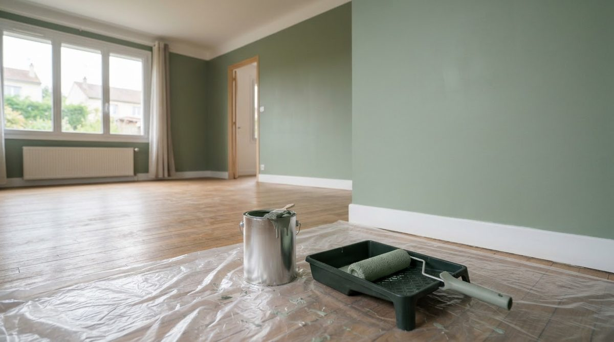
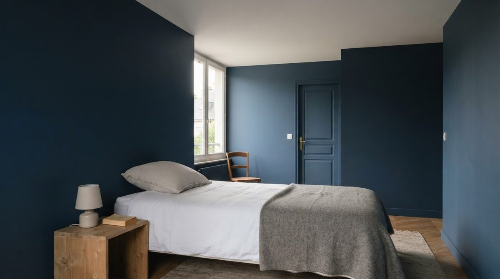
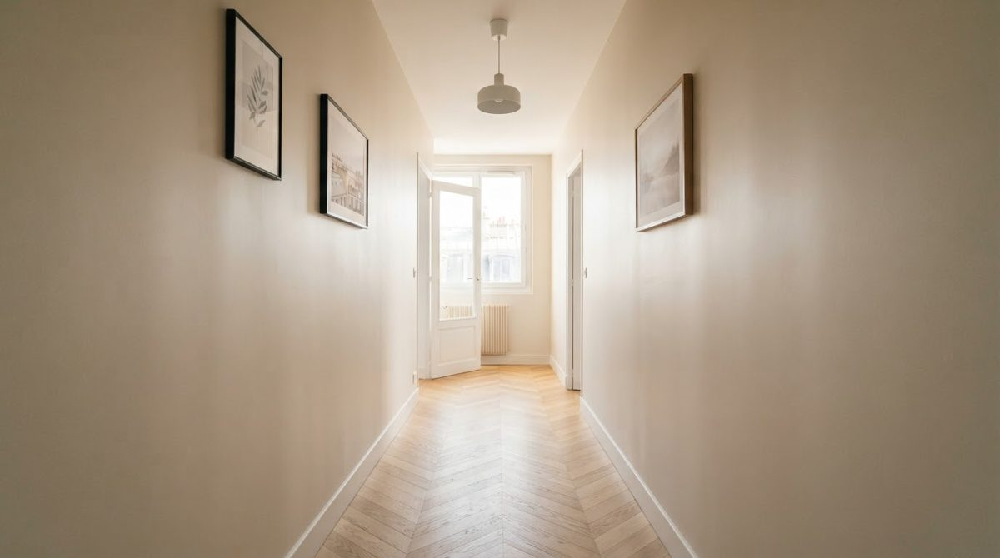
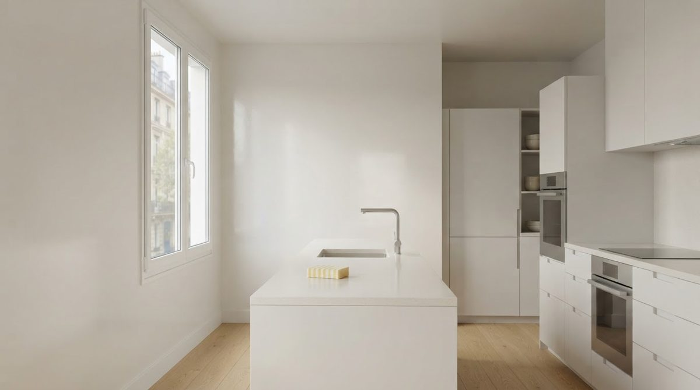
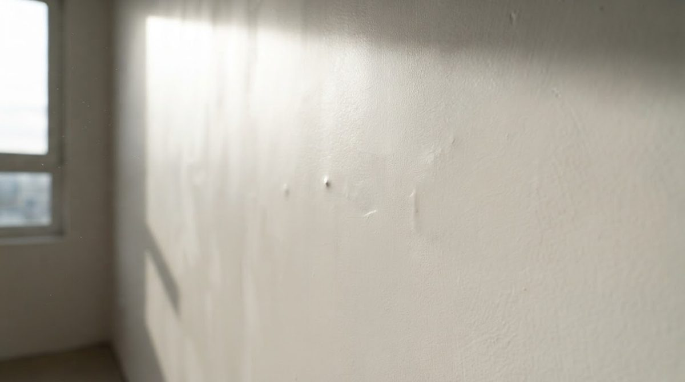
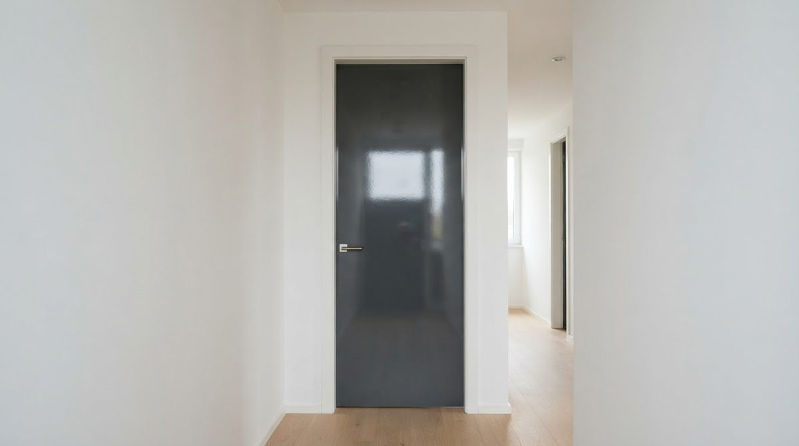
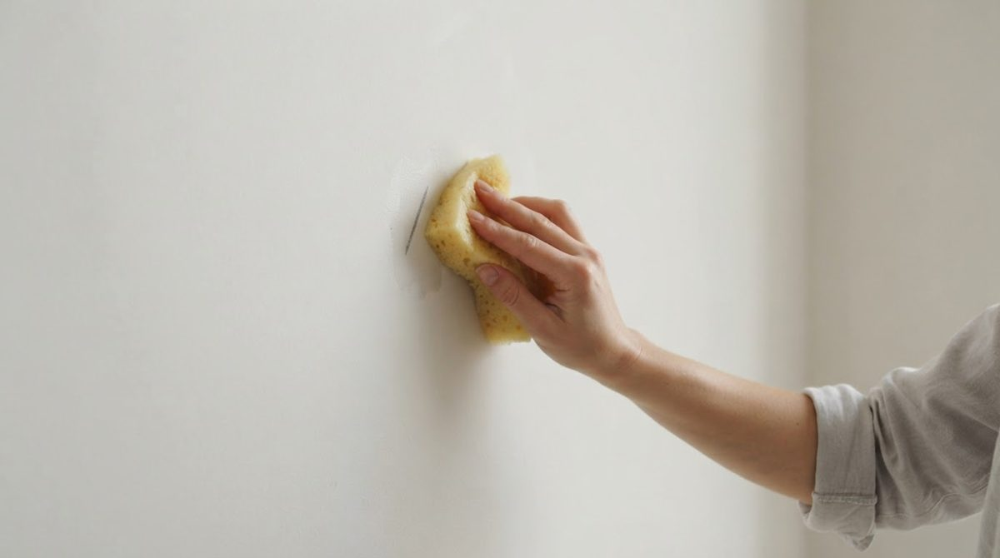
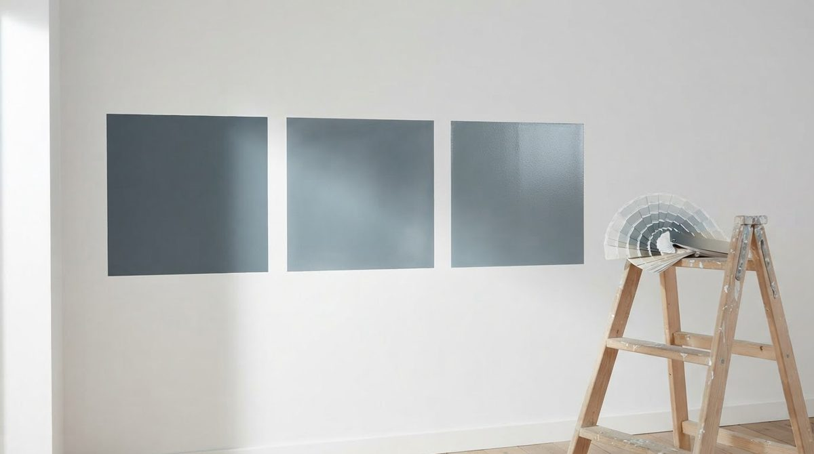

Peinture mat, velours ou satin : quelle finition choisir pour chaque pièce ?
Par Harmonie Sols et Peintures, artisan peintre à Tours · 4 min de lecture

C'est une des premières questions qu'on nous pose en visite de devis : « Je prends quoi, du mat ou du satin ? » Et souvent, le client a déjà choisi sa couleur mais pas la finition. Pourtant, c'est la finition qui va décider du rendu final, de la tenue dans le temps et de la facilité d'entretien.
Pour faire simple : plus une peinture brille, plus elle se nettoie facilement… mais plus elle montre les défauts du mur. Tout le choix se joue là-dessus.
Le mat : le rendu le plus propre sur les murs et les plafonds

Une peinture mate ne renvoie presque pas la lumière. Résultat : elle « gomme » les petites imperfections du support, les légères bosses, les reprises d'enduit. C'est pour ça qu'on l'utilise sur quasiment tous les plafonds. Au plafond, la lumière des fenêtres arrive en rasant, et le moindre défaut saute aux yeux avec une peinture qui brille.
Sur les murs, le mat donne un rendu doux, moderne, très apprécié dans les chambres et les séjours. Les couleurs paraissent plus profondes.
Son point faible : l'entretien. Une tache sur un mat classique se nettoie mal, et en frottant on peut laisser une trace brillante. Aujourd'hui, il existe des mats lessivables qui tiennent beaucoup mieux, mais il faut les choisir exprès.
Petit conseil : sur une couleur foncée en mat, les frottements (un sac, une chaise, une main) laissent plus facilement des marques. Dans un couloir étroit, on réfléchit à deux fois.
Le velours : le bon compromis pour la vie de tous les jours

Le velours a un très léger reflet, à peine visible. Il se lave mieux que le mat et résiste mieux aux frottements, tout en restant discret.
C'est souvent ce qu'on conseille pour les pièces qui vivent beaucoup : séjour, couloir, entrée, chambre d'enfant. Les petites mains sur les murs, les traces de jouets, ça part avec une éponge sans tout abîmer.
Par contre, le velours montre un peu plus les défauts que le mat. Si le mur est en mauvais état, il faudra une préparation plus soignée avant de peindre.
Le satin : pour les pièces humides et les boiseries

Le satin brille nettement plus. Il est très résistant, il supporte les lavages répétés et il craint moins l'humidité. C'est la finition classique pour la cuisine, la salle de bain, les WC, et pour les boiseries : portes, plinthes, encadrements.
Le revers de la médaille : le satin ne pardonne rien.

Chaque bosse, chaque trace de rebouchage mal poncée, chaque reprise se voit, surtout en lumière rasante. Un satin sur un mur mal préparé, c'est un mur qui a l'air raté, même avec une belle peinture. Sur ce genre de finition, la préparation compte plus que la peinture elle-même.
Et le brillant ?

On le voit de moins en moins sur les murs. Il reste utilisé sur certaines boiseries, des portes, des radiateurs ou des meubles, quand on veut un effet laqué. Là aussi, il faut un support parfaitement lisse.
Comment savoir si une peinture se lave vraiment ?

Sur la fiche technique d'une peinture, regardez la « classe de résistance à l'abrasion humide » (norme NF EN 13300). Elle va de 1 à 5 : la classe 1 est la plus résistante. Pour une pièce qui vit beaucoup, on vise une classe 1 ou 2. Ce n'est pas toujours écrit en gros sur le pot, mais c'est ce qui fait la différence entre une peinture qui tient et une qui marque au premier coup d'éponge.
Notre façon de faire en résumé

- Plafonds : mat, quasiment toujours
- Chambres et séjour : mat ou velours selon l'usage
- Couloirs, entrée, chambre d'enfant : velours
- Cuisine, salle de bain, WC : satin ou peinture spéciale pièces humides
- Portes, plinthes, boiseries : satin
Évidemment, ce n'est pas une règle gravée dans le marbre. Un client qui veut du mat dans sa cuisine peut l'avoir, on choisira juste un mat lessivable et adapté. L'important, c'est d'en parler avant, pour que le rendu corresponde à ce que vous imaginez et que la peinture tienne dans le temps.
Un projet de peinture à Tours ou en Indre-et-Loire ? Harmonie Sols et Peintures, artisan peintre et solier, se déplace pour une visite et un devis gratuits.